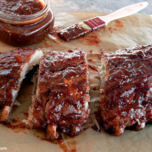

Slow Cooker Baby Back Ribs

Description
This slow cooker baby back ribs recipe was originally shared by Norah and has since become a favorite among home cooks everywhere. With thousands of glowing reviews, it’s loved for being both simple and delicious — the kind of “set it and forget it” meal that delivers fall-apart tender ribs with almost no effort. Finished in the oven for that sticky, caramelized barbecue glaze, these ribs prove you don’t need a grill to make a crowd-pleasing classic.
Ingredients
- 3 pounds baby back ribs, trimmed
- Salt and ground black pepper
- 1/2 cup water
- 1/2 onion, sliced
- 1 clove garlic, minced
- 1 bottle barbeque sauce
Steps
- Gather all Ingredients
- Season ribs with salt and pepper
- Pour 1/2 cup water into the slow cooker, then add ribs. Scatter onion and garlic over top. Cover and cook on Low for 8 hours or High for 4 hours
- When the ribs are almost finished, preheat the oven to 375 degrees F
- Transfer ribs from the slow cooker to a baking sheet; discard onion and garlic. Coat ribs with barbeque sauce
- Bake ribs in the preheated oven until sauce caramelizes and sticks to meat, 10 to 15 minutes
Home